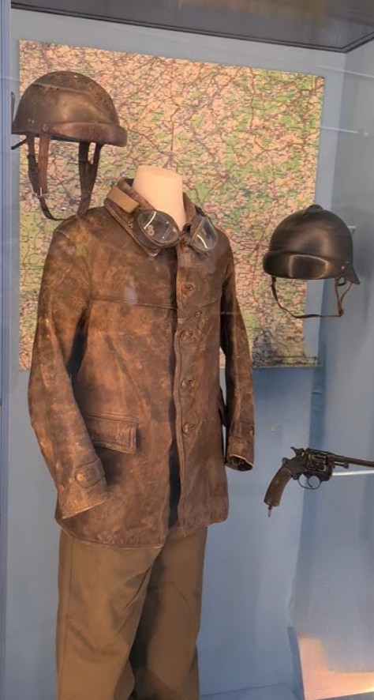
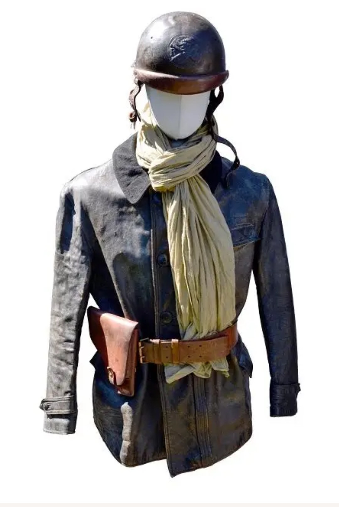

Le tankiste français de 1939–1940 sert au sein des équipages de chars B1 bis, SOMUA S35,
Hotchkiss H39 ou Renault R35. Son uniforme est conçu pour résister aux contraintes de la vie
à l’intérieur du blindé : chaleur, métal, huile, vibrations et espace réduit.

Mannequin de tankiste français – uniforme complet, musée.
Tenue générale du tankiste
L’élément le plus caractéristique est la veste en cuir brun modèle 1935,
épaisse et résistante, portée au-dessus d’une chemise ou d’un tricot. Elle protège le tankiste
des chocs et des frottements contre les parois du char.
Le pantalon de travail kaki est en toile robuste, souvent glissé dans des
brodequins 1917, standard de l’armée française. L’ensemble reste relativement
ajusté pour ne pas gêner les mouvements dans l’habitacle.

Variante de tenue de tankiste – présentation muséale.
Équipement individuel et variantes
Selon les unités et les périodes, le tankiste peut porter une combinaison de char
en toile ou en cuir, parfois de couleur marron ou noire. Cette tenue une pièce facilite les
mouvements et limite les accrochages dans le compartiment de combat.
Une ceinture en cuir fauve avec étui de revolver ou de pistolet complète
l’équipement, ainsi que des gants en cuir pour manipuler les pièces métalliques
chaudes ou coupantes à l’intérieur du blindé.
Casque Adrian 1935 Tankiste

Casque Adrian 1935 spécifique aux équipages de chars.
Le tankiste français porte un casque Adrian 1935 Tankiste, reconnaissable à
ses oreillettes en cuir et à son renfort frontal. Ce casque
est conçu pour protéger la tête tout en permettant le port du casque radio ou des écouteurs
utilisés pour la communication à l’intérieur du char.
Un foulard clair ou une écharpe est souvent noué autour du cou pour protéger
des frottements et de la poussière. Cet élément, bien visible sur les mannequins muséaux,
participe aussi à l’iconographie classique du tankiste français de 1940.
Équipage et vie à bord du char
Les équipages de chars français comptent généralement entre trois et cinq hommes selon le
modèle de blindé : chef de char, pilote, tireur, radio, parfois chargeur. L’uniforme du
tankiste doit rester fonctionnel dans un espace très réduit, souvent sombre, bruyant et
soumis aux secousses.
La photo d’époque montrant trois tankistes devant leur char illustre la
réalité de ces équipages en 1940 : tenue pratique, équipement limité, mais forte cohésion
de groupe face aux contraintes du combat mécanisé.